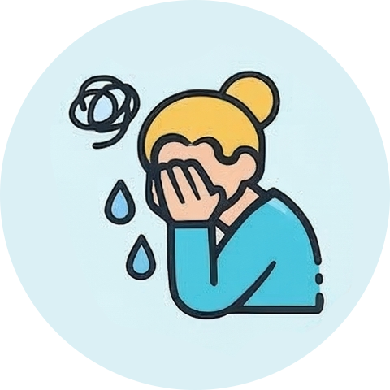
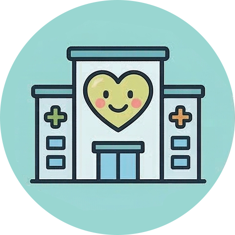

마음건강 통계 용산구 기본 현황 마음건강 통계 출처 : 질병관리청 지역사회건강조사 용산구민 스트레스 인지율 15.7% 스트레스로 인한 정신건강 상담률 17.3% 용산구민 고위험 음주율 16.0%  용산구민 우울감 경험률 2.6% 우울감으로 인한 정신건강 상담률 45.4% 용산구 인구 1인당 정신건강 관련 세출예산 6,621원  정신의료기관 및정신건강증진기관 수 11개 용산구민 스트레스 인지율 단위 : % 출처: 질병관리청 지역사회건강조사자료갱신일: 2025.03.14 용어설명 스트레스 인지율: 평소 일상생활 중 스트레스를 '대단히 많이' 또는 '많이' 느끼는 사람의 분율 이용상 유의점 본 자료는 조율(총 발생건수를 전체 모집단으로 나눈 값으로, 해당 지역 모집단의 성·연령별 등의 인구 집단 특성을 반영하여 보정한 통계치)을 적용함 닫기 스트레스로 인한 정신건강 상담률 단위 : % 출처: 질병관리청 지역사회건강조사자료갱신일: 2025.03.14 용어설명 스트레스 인지율: 평소 일상생활 중 스트레스를 '대단히 많이' 또는 '많이' 느끼는 사람의 분율 이용상 유의점 본 자료는 조율(총 발생건수를 전체 모집단으로 나눈 값으로, 해당 지역 모집단의 성·연령별 등의 인구 집단 특성을 반영하여 보정한 통계치)을 적용함 닫기 용산구민 고위험 음주율 단위 : % 출처: 질병관리청 지역사회건강조사자료갱신일: 2025.03.14 용어설명 연간음주자의 고위험 음주율: 최근 1년 동안 음주한 사람 중에서 남자는 한 번의 술자리에서 7잔 이상(또는 맥주 5캔 정도), 여자는 5잔 이상(또는 맥주 3캔 정도)를 주2회 이상 마시는 사람의 분율 이용상 유의점 본 자료는 조율(총 발생건수를 전체 모집단으로 나눈 값으로, 해당 지역 모집단의 성·연령별 등의 인구 집단 특성을 반영하여 보정한 통계치)을 적용함 자료의 전국 데이터는 전국의 시·군·구 중앙값으로 산출함 닫기 용산구민 우울감 경혐률 단위 : % 출처: 질병관리청 지역사회건강조사자료갱신일: 2025.03.14 용어설명 우울감 경험률: 최근 1년 동안 연속적으로 2주 이상 일상생활에 지장이 있을 정도의 우울감(슬픔이나 절망감 등)을 경험한 사람의 분율 이용상 유의점 본 자료는 조율(총 발생건수를 전체 모집단으로 나눈 값으로, 해당 지역 모집단의 성·연령별 등의 인구 집단 특성을 반영하여 보정한 통계치)을 적용함 닫기 용산구민 우울감으로 인한 정신건강 상담률 단위 : % 출처: 질병관리청 지역사회건강조사자료갱신일: 2025.03.14 용어설명 우울증상으로 인한 정신건강 상담률: 최근 1년 동안 연속적으로 2주 이상 일상생활에 지장이 있을정도로 슬프거나 절망감을 느낀 적이 있는 사람 중 전문가의 상담(의료기관, 전문상담기관, 보건소 등)을 받아 본 적이 있는 사람의 분율 이용상 유의점 본 자료는 조율(총 발생건수를 전체 모집단으로 나눈 값으로, 해당 지역 모집단의 성·연령별 등의 인구 집단 특성을 반영하여 보정한 통계치)을 적용함 분석대상자 수가 20명 미만인 경우 통계값이 제시되지 않음 닫기 용산구 인구 1인당 정신건강 관련 세출예산 단위 : 원 출처: 질병관리청 지역사회건강조사자료갱신일: 2025.03.14 용어설명 ‘정신건강 관련 기관 및 서비스 현황조사’에 응답한 내용을 기반으로 분석된 데이터로, 실제 기관 현황과 상이할 수 있음 이용상 유의점 해당 자료는 보건소, 광역정신건강복지센터, 광역자살예방센터, 기초정신건강복지센터, 정신재활시설, 정신요양시설, 자립생활주택 및 지원주택의 예산 현황을 포함함 광역정신건강복지센터, 자살예방센터, 자립생활주택, 지원주택, 정신요양시설의 경우 특정 자치구에 귀속되지 않아 서울시 합계에 포함됨 닫기 정신의료기관 및 정신건강증진기관 수 단위 : 개소 출처: 질병관리청 지역사회건강조사자료갱신일: 2025.03.14 용어설명 정신건강증진기관: 광역정신건강복지센터, 기초정신건강복지센터, 정신재활시설, 중독관리통합지원센터를 포함함 이용상 유의점 요양병원, 한방병원은 분석에서 제외됨 정신건강증진기관의 경우 서울시의 예산을 지원받아 정신건강사업을 수행하고 있는 기관을 대상으로 분석함 광역정신건강복지센터의 경우 특정 자치구에 귀속되지 않아 서울시 합계에 포함됨 ‘정신건강 관련 기관 및 서비스 현황조사’ 및 ‘정신의료기관 현황조사’에 응답한 내용을 기반으로 분석된 데이터로, 실제 기관 현황과 상이할 수 있음 닫기